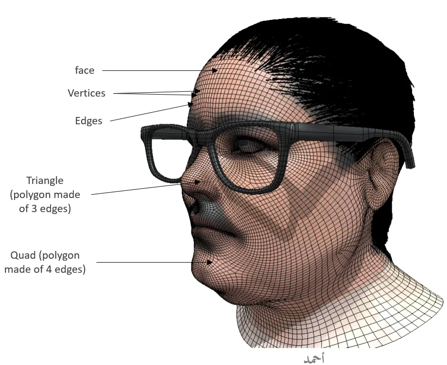
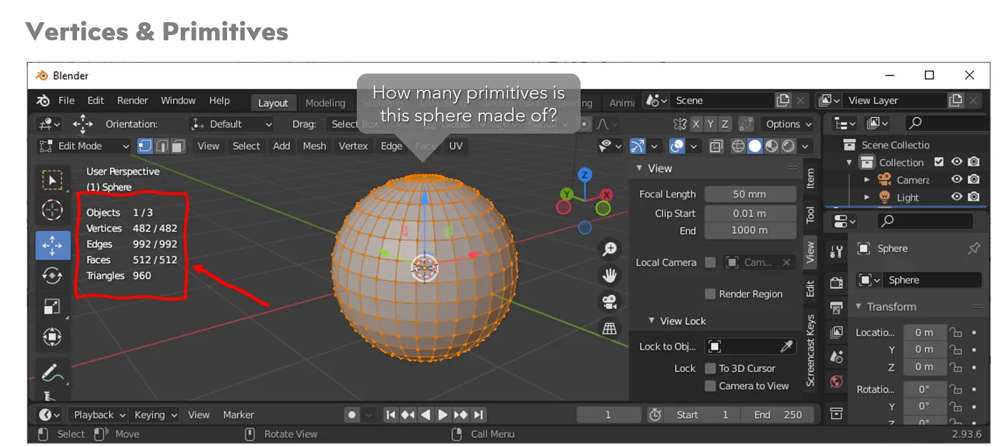
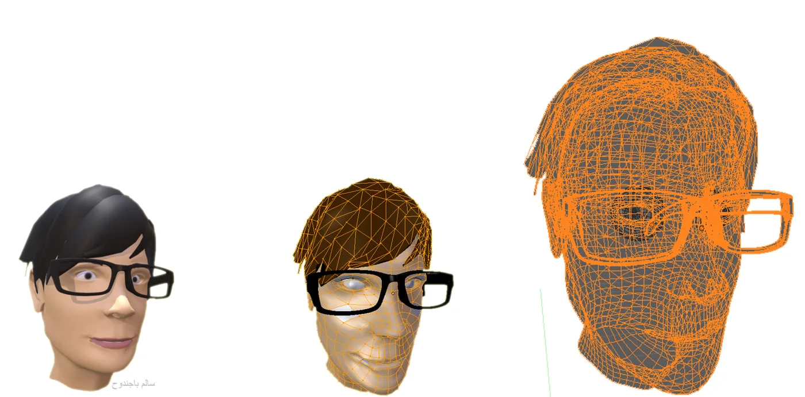
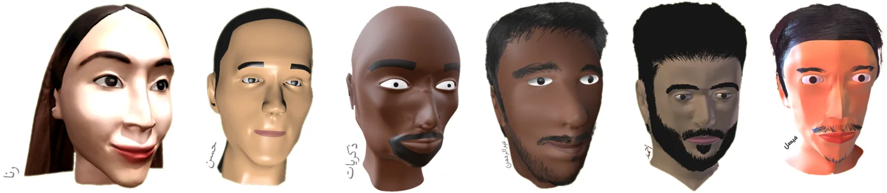
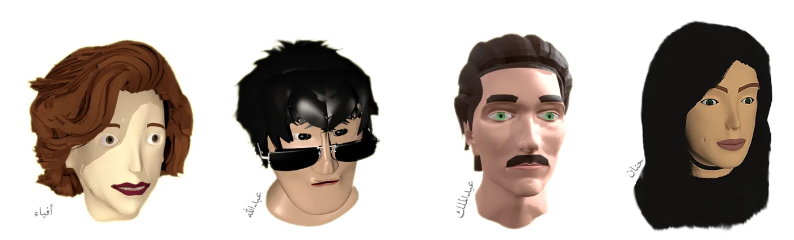
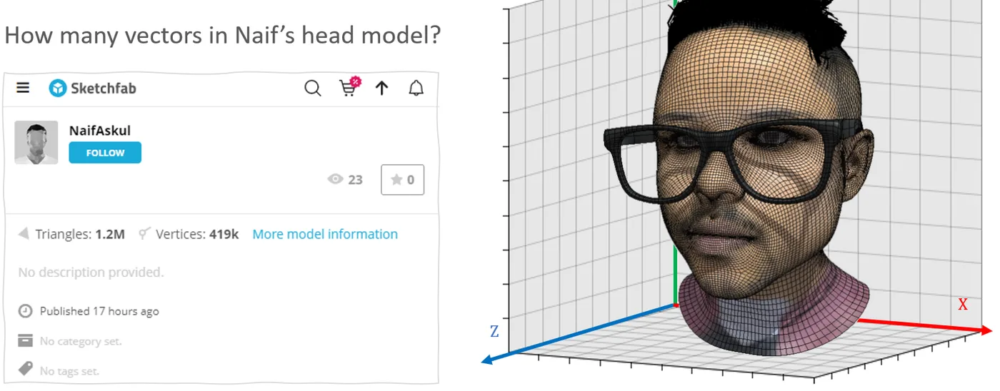
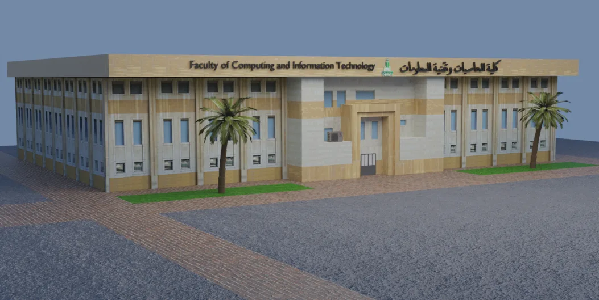

IT 280 · Computer Graphics and Multimedia · Week 8
The graphics pipeline and 3D modelling
How a GPU turns 3D meshes into pixels: the pipeline stages, shaders, the depth buffer and the APIs that drive them, and how 3D models are built.
After this week you can
- Compare rasterization and ray tracing.
- Describe meshes in terms of vertices, edges, faces, triangles and normals.
- Trace a vertex through model, world, camera, clip and screen space.
- Explain each pipeline stage, including shaders, rasterization and the depth test.
- Compare OpenGL, Vulkan, Direct3D, Metal and WebGPU, and the role of engines.
- Box-model an object in Blender with clean topology and export it as glTF.
بعد هذا الأسبوع ستكون قادرًا على أن:
- تقارن التحويل إلى نقطي بتتبّع الأشعة.
- تصف الشبكات بالرؤوس والحواف والأوجه والمثلثات والمتجهات العمودية.
- تتتبّع رأسًا عبر فضاءات النموذج والعالم والكاميرا والقص والشاشة.
- تشرح كل مرحلة من مراحل خط المعالجة، ومنها المظلِّلات والتحويل إلى نقطي واختبار العمق.
- تقارن OpenGL وVulkan وDirect3D وMetal وWebGPU، ودور المحرّكات.
- تنمذج جسمًا بالنمذجة الصندوقية في Blender بطوبولوجيا نظيفة وتصدّره بصيغة glTF.
ترجمة عربية مساندة للشرح. المرجع هو النص الإنجليزي، وهو لغة الاختبارات والبرامج.
01 · Two ways to render
From a 3D scene to an image
تنتقل الكتلة الثالثة إلى الأبعاد الثلاثة. والمشهد ثلاثي الأبعاد وصف: نماذج مصنوعة من الهندسة، ومواد تحدّد مظهر الأسطح، وإضاءة، وكاميرا. والتصيير (rendering) يحوّل هذا الوصف إلى صورة ثنائية الأبعاد، إطار كالإطارات التي حرّرتها في الأسبوع السادس.
وهناك طريقتان رئيسيتان:
- التحويل إلى نقطي (rasterization) يأخذ كل مثلث من كل نموذج، ويحدّد أين يقع على الشاشة، ويملأ البكسلات التي يغطيها. وهو سريع جدًا، وبه ترسم الألعاب وUnity ومحرّك EEVEE في Blender وكل واجهة تستخدمها الأبعاد الثلاثة، بمعدل 60 إطارًا في الثانية أو أكثر.
- تتبّع الأشعة (ray tracing) يعمل بالعكس: لكل بكسل يتتبّع أشعة الضوء من الكاميرا إلى المشهد، وهي ترتدّ عن الأسطح نحو مصادر الضوء. وينتج انعكاسات وظلالًا وإضاءة غير مباشرة واقعية، لكنه يكلّف حسابًا أكبر بكثير. وتستخدمه الأفلام ومحرّك Cycles في Blender؛ وفي وحدات GPU الحديثة عتاد لتسريعه، وأصبحت الألعاب تمزج بين الطريقتين.
يشرح هذا الأسبوع التحويل إلى نقطي، خط المعالجة الذي يُبنى عليه كل محرّك يعمل في الزمن الحقيقي. ويعود الأسبوع 12 إلى تتبّع الأشعة عند المقارنة بين التصيير في الزمن الحقيقي والتصيير المسبق.
تحقّق من فهمك: لعبة تعمل بمعدل 60 fps بإضاءة جيدة، لكن المشهد نفسه يستغرق ثلاث دقائق للصورة عند تصييره لملصق فيلم. أي طريقة يستخدم كل منهما على الأرجح؟
الإجابة: اللعبة تستخدم التحويل إلى نقطي (ربما مع بعض مؤثرات تتبّع الأشعة) لتلتزم بميزانية 16.7 ms من الأسبوع الثاني. والملصق يستخدم تتبّع المسارات الكامل، حيث تُقبل دقائق للصورة الواحدة.
ترجمة عربية مساندة للشرح. المرجع هو النص الإنجليزي، وهو لغة الاختبارات والبرامج.
Block 3 moves into three dimensions. A 3D scene is a description: models made of geometry, materials that say how surfaces look, lights and a camera. Rendering turns that description into a 2D image, a frame like those you edited in Week 6.
There are two main approaches:
- Rasterization takes each triangle of each model, works out where it lands on the screen, and fills in the pixels it covers. It is extremely fast and is how games, Unity, Blender’s EEVEE engine and every interface you use draw 3D, at 60 frames per second or more.
- Ray tracing works the other way round: for each pixel it follows rays of light from the camera into the scene, bouncing off surfaces towards lights. It produces realistic reflections, shadows and indirect light, but costs far more computation. Film and Blender’s Cycles engine use it; modern GPUs have hardware to accelerate it, and games now mix the two.
This week explains rasterization, the pipeline every real-time engine is built on. Week 12 returns to ray tracing when comparing real-time and offline rendering.
A game runs at 60 fps with good lighting, but the same scene rendered for a film poster takes three minutes per image. Which approach is each probably using?
The game uses rasterization (perhaps with some ray-traced effects) to meet the 16.7 ms budget from Week 2. The poster uses full ray (path) tracing, where minutes per image are acceptable.
02 · 3D models
Meshes: vertices, edges and faces
النماذج ثلاثية الأبعاد في الزمن الحقيقي شبكات مضلّعات (polygon meshes): أسطح مبنية من قطع مسطّحة. وللشبكة ثلاثة أنواع من العناصر:
- الرؤوس (vertices): نقاط في الفضاء الثلاثي، لكل منها إحداثيات x, y, z. ويمكن أن يحمل الرأس بيانات أخرى: المتجه العمودي (normal، الاتجاه الذي يواجهه السطح، ويُستخدم للإضاءة في الأسبوع 12)، وإحداثيات UV (موضعه على الخامة، الأسبوع 11)، ولونًا.
- الحواف (edges): خطوط مستقيمة تصل بين رأسين.
- الأوجه (faces، المضلّعات): أسطح مسطّحة تحيط بها الحواف. ويعمل المنمذجون غالبًا بالأوجه الرباعية (quads) لأنها تُقسَّم وتتشوّه بنظافة؛ أما الأوجه ذات الأضلاع الأكثر من أربعة (n-gons) فتسبّب مشكلات في التظليل.
أما GPU نفسها فلا ترسم إلا المثلثات: فثلاث نقاط تقع دائمًا على مستوى واحد، فلا يكون المثلث ملتبسًا أبدًا. ويُقسَّم كل وجه رباعي أو متعدد الأضلاع إلى مثلثات قبل رسمه. وعدد المثلثات، أي عدد المضلّعات، مقياس أساسي لكلفة رسم النموذج: شخصية لعبة على الهاتف قد تستخدم بضعة آلاف من المثلثات، وشخصية فيلم ملايين.
والأسطح المنحنية تُقرَّب بكثير من الأوجه المسطّحة الصغيرة، تمامًا كما تُقرَّب الدائرة على شاشة البكسلات بمربعات صغيرة. والأوجه الأكثر تبدو أنعم لكنها تكلّف أكثر؛ والنمذجة الجيدة تضع التفاصيل حيث تُرى وتستخدم الخامات (الأسبوع 11) لما سواها.
تحقّق من فهمك: كرة في Blender تبدو ذات أوجه ظاهرة في تصيير قريب. اذكر طريقتين لجعلها تبدو ناعمة.
الإجابة: أضف أوجهًا أكثر (مثل مُعدِّل Subdivision Surface)، أو استخدم التظليل الناعم الذي يستوفي المتجهات العمودية فتتغيّر الإضاءة بنعومة عبر كل وجه مسطّح (الأسبوع 12). وعادةً كلاهما باعتدال.
ترجمة عربية مساندة للشرح. المرجع هو النص الإنجليزي، وهو لغة الاختبارات والبرامج.
Real-time 3D models are polygon meshes: surfaces built from flat pieces. A mesh has three kinds of element:
- Vertices: points in 3D, each with x, y and z coordinates. A vertex can carry more data: a normal (the direction the surface faces, used for lighting in Week 12), UV coordinates (where it sits on a texture, Week 11) and a colour.
- Edges: straight lines joining two vertices.
- Faces (polygons): flat surfaces enclosed by edges. Modellers mostly work with four-sided quads, because they subdivide and deform cleanly; faces with more than four sides (n-gons) cause shading problems.
The GPU itself only draws triangles: three points always lie on one flat plane, so a triangle is never ambiguous. Every quad or n-gon is split into triangles before drawing. The number of triangles, the polygon count, is a key measure of how expensive a model is to draw: a mobile game character might use a few thousand triangles, a film character millions.
Curved surfaces are approximated by many small flat faces, exactly as a circle on a pixel screen is approximated by small squares. More faces look smoother but cost more; good modelling puts detail where it is seen and uses textures (Week 11) for the rest.



A sphere in Blender looks faceted in a close-up render. Name two ways to make it look smooth.
Add more faces (for example a Subdivision Surface modifier), or use smooth shading, which interpolates the normals so lighting varies smoothly across each flat face (Week 12). Usually both, in moderation.
03 · Coordinate spaces
A journey through coordinate spaces
لا معنى لموضع الرأس دون إطار مرجعي. وفي طريقه إلى الشاشة يُعبَّر عن كل رأس في سلسلة من فضاءات الإحداثيات، يُوصل إلى كل منها بتحويل:
- فضاء النموذج (model / local space): إحداثيات نسبةً إلى أصل النموذج نفسه، كما بناه الفنان. فأرجل الكرسي «على بعد 0.4 m تحت مركزه».
- تحويل النموذج يضع النموذج في المشهد: فضاء العالم (world space) المشترك بين كل الأجسام. (الأسبوع 9.)
- تحويل العرض يعيد التعبير عن العالم من موضع الكاميرا واتجاهها: فضاء الكاميرا (camera space). (الأسبوع 10.)
- تحويل الإسقاط يطبّق المنظور فتصغر الأشياء البعيدة، إلى فضاء القص (clip space)، حيث يمكن قطع كل ما يقع خارج مجال رؤية الكاميرا. (الأسبوع 10.)
- تحويل منفذ العرض (viewport) يحوّل النتيجة إلى مواضع بكسلات في فضاء الشاشة (screen space).
وكل هذه الخطوات ضرب مصفوفات، تنفّذه GPU بسرعة هائلة. ويبنيها الأسبوعان 9 و10 واحدةً واحدة.
ترجمة عربية مساندة للشرح. المرجع هو النص الإنجليزي، وهو لغة الاختبارات والبرامج.
A vertex position means nothing without a reference frame. On its way to the screen, every vertex is expressed in a series of coordinate spaces, each reached by a transformation:
- Model space (object or local space): coordinates relative to the model’s own origin, as the artist built it. A chair’s legs are “0.4 m below its centre”.
- The model transform places the model in the scene: world space, shared by all objects. (Week 9.)
- The view transform re-expresses the world from the camera’s position and direction: camera space. (Week 10.)
- The projection transform applies perspective, making distant things smaller, into clip space, where anything outside the camera’s view can be cut away. (Week 10.)
- The viewport transform maps the result to pixel positions in screen space.
All of these steps are matrix multiplications, which GPUs perform extremely fast. Weeks 9 and 10 build them one at a time.
04 · The pipeline
The four stages of the graphics pipeline
خط معالجة التصيير خط إنتاج. تدخل البيانات من طرف؛ وكل مرحلة تؤدي عملًا واحدًا على عناصر كثيرة بالتوازي (الأسبوع الثاني) وتمرّر النتائج.
- مرحلة التطبيق (CPU). يحدّث البرنامج المشهد (منطق اللعبة، والحركة، والإدخال)، ويقرّر ما يجب رسمه، ويرسل البيانات والتعليمات إلى GPU في استدعاءات رسم (draw calls): «ارسم هذه الشبكة بهذه المادة».
- معالجة الهندسة (GPU، قابلة للبرمجة). برنامج صغير هو مظلِّل الرؤوس (vertex shader) يعمل مرة لكل رأس ويحوّل موضعه عبر فضاءات القسم 03. ثم تُجمَّع الرؤوس في عناصر أولية (مثلثات)؛ وتُقصّ المثلثات الواقعة خارج الرؤية، ويمكن تخطّي المثلثات التي تعطي ظهرها للكاميرا (استبعاد الوجوه الخلفية back-face culling).
- التحويل إلى نقطي (GPU، ثابتة). يتحوّل كل مثلث إلى قطع (fragments): بكسل مرشّح لكل مركز بكسل يغطيه المثلث. والقيم المخزّنة عند الرؤوس (اللون، UV، المتجه العمودي، العمق) تُستوفى عبر المثلث لكل قطعة.
- معالجة البكسلات (GPU، قابلة للبرمجة). يعمل مظلِّل القطع (fragment shader) مرة لكل قطعة ويحسب لونها من الخامات والإضاءة. ثم يقرّر اختبار العمق (القسم 05) والمزج هل يُكتب هذا اللون في ذاكرة الإطار (الأسبوع الثاني) وكيف.
والقطعة ليست بكسلًا بعد: فقد تتنافس عدة قطع من مثلثات مختلفة على البكسل نفسه، ولا يصبح لون البكسل النهائي إلا للفائز (أو لمزيج).
تحقّق من فهمك: مشهد فيه 50,000 مثلث، لكن نحو 40% فقط مرئي من الكاميرا. أي خطوات خط المعالجة تمنع GPU من إضاعة الوقت على الباقي؟
الإجابة: القص يزيل المثلثات خارج مجال رؤية الكاميرا، واستبعاد الوجوه الخلفية يتخطّى المثلثات التي تعطي ظهرها. وقبل ذلك يستطيع التطبيق ألا يرسل الأجسام الواقعة خارج الشاشة كليًا (استبعاد خارج مخروط الرؤية).
ترجمة عربية مساندة للشرح. المرجع هو النص الإنجليزي، وهو لغة الاختبارات والبرامج.
The rendering pipeline is a production line. Data enters at one end; each stage does one job on many items in parallel (Week 2) and passes the results on.
- Application stage (CPU). The program updates the scene (game logic, animation, input), decides what needs drawing and sends the data and instructions to the GPU in draw calls: “draw this mesh with this material”.
- Geometry processing (GPU, programmable). A small program, the vertex shader, runs once for every vertex and transforms its position through the coordinate spaces of section 03. Vertices are then assembled into primitives (triangles); triangles outside the view are clipped, and triangles facing away from the camera can be skipped (back-face culling).
- Rasterization (GPU, fixed). Each triangle is converted into fragments: one candidate pixel for every pixel centre the triangle covers. Values stored at the vertices (colour, UV, normal, depth) are interpolated across the triangle for each fragment.
- Pixel processing (GPU, programmable). The fragment shader runs once per fragment and computes its colour from textures and lighting. Then the depth test (section 05) and blending decide whether and how that colour is written to the frame buffer (Week 2).
A fragment is not yet a pixel: several fragments from different triangles may compete for the same pixel, and only the winner (or a blend) becomes the pixel’s final colour.
Try it · step through the pipeline
Two triangles on a 40 × 24 pixel screen. Step through the stages and switch the depth test off to see what goes wrong.A scene has 50,000 triangles but only about 40% are visible from the camera. Which pipeline steps stop the GPU wasting time on the rest?
Clipping removes triangles outside the camera’s view, and back-face culling skips triangles facing away. Earlier still, the application can avoid sending objects that are entirely off screen (frustum culling).
05 · Visibility
Which surface is in front? The z-buffer
عندما يغطي مثلثان البكسل نفسه، يجب أن يفوز الأقرب، أيًّا كان ترتيب رسمهما.
وفكرة قديمة هي خوارزمية الرسام (painter’s algorithm) ترتّب المثلثات من البعيد إلى القريب وترسمها بهذا الترتيب، كما يرسم الرسام الخلفية أولًا. وتفشل عندما تتداخل المثلثات في حلقة، وترتيب ملايين المثلثات في كل إطار بطيء.
أما وحدات GPU فتستخدم ذاكرة العمق (depth buffer / z-buffer): صورة ثانية بحجم ذاكرة الإطار، تخزّن لكل بكسل عمق أقرب سطح رُسم حتى الآن. ولكل قطعة جديدة تُجري GPU اختبار العمق: إذا كانت القطعة أقرب من العمق المخزّن استبدلت اللون والعمق؛ وإلا تُرمى. فلا يعود ترتيب الرسم مهمًا للأجسام المصمتة. جرّب إيقاف الاختبار في العرض التفاعلي: المثلث المرسوم أخيرًا يغطي الآخر دائمًا، حتى حيث يجب أن يكون خلفه.
والأجسام الشفافة هي الاستثناء: يجب أن تُرسم بعد الأجسام المصمتة وتُرتّب من البعيد إلى القريب، لأن السطح الشفاف يجب أن يمتزج بما خلفه.
وجهان على العمق نفسه تمامًا (مثل ملصق موضوع على جدار) يومضان مع حركة الكاميرا، لأن التقريب يجعل أيًّا منهما «يفوز» من إطار لآخر. ويُسمّى ذلك تنازع العمق (z-fighting). حرّك أحد السطحين قليلًا إلى الأمام.
ترجمة عربية مساندة للشرح. المرجع هو النص الإنجليزي، وهو لغة الاختبارات والبرامج.
When two triangles cover the same pixel, the nearer one must win, whatever order they were drawn in.
An early idea, the painter’s algorithm, sorts triangles from far to near and draws them in that order, as a painter paints the background first. It fails when triangles overlap each other in a cycle, and sorting millions of triangles every frame is slow.
GPUs instead use a depth buffer (z-buffer): a second image, the same size as the frame buffer, storing for each pixel the depth of the nearest surface drawn so far. For each new fragment the GPU performs a depth test: if the fragment is nearer than the stored depth, it replaces the colour and the depth; otherwise it is thrown away. Draw order no longer matters for solid objects. Try switching the test off in the demo: the triangle drawn last always covers the other, even where it should be behind.
Transparent objects are the exception: they must still be drawn after the solid ones and sorted from far to near, because a see-through surface has to blend with what is already behind it.
Two faces at exactly the same depth (for example a decal placed flat on a wall) flicker as the camera moves, because rounding makes either one “win” from frame to frame. This is called z-fighting. Move one surface slightly forward.
06 · Shaders
Shaders: small programs on the GPU
كان لعتاد الرسوميات القديم خط معالجة ثابت الوظائف (fixed-function): لا يستطيع المبرمج إلا تشغيل الميزات المدمجة وإيقافها، عبر أوامر مثل glTranslatef وglLightfv الموجودة في ملاحظات CPIT285 القديمة. ومنذ الملف الأساسي لـOpenGL 3.x (2009–2010) أُزيلت هذه الأوامر: فالمراحل القابلة للبرمجة تُكتب مظلِّلات (shaders)، والبرنامج يوفّر مصفوفاته وإضاءته بنفسه.
وتُكتب مظلِّلات OpenGL بلغة GLSL (لغة تظليل OpenGL)، وهي تشبه لغة C. والمظلِّلان اللذان يحتاج إليهما كل برنامج مكتوبان في النص الإنجليزي.
مظلِّل الرؤوس يضرب كل موضع في مصفوفة واحدة مجمّعة (الأسبوعان 9–10)؛ ومظلِّل القطع يُخرج لونًا (لاحقًا من الخامات والإضاءة، الأسبوعان 11–12). والمتغيّر الموحّد (uniform) قيمة تضبطها CPU مرة لكل استدعاء رسم وتقرؤها كل نسخ المظلِّل. ويكتب Unity وBlender المظلِّلات عنك عبر محرّرات عُقد مرئية (Shader Graph، Shader Editor)، لكنها تولّد في الأساس هذا النوع نفسه من الشيفرة.
المظلِّلات القابلة للبرمجة هي سبب أهمية آلاف أنوية GPU (الأسبوع الثاني): البرنامج القصير نفسه يعمل على ملايين الرؤوس والقطع بالتوازي، في كل إطار.
ترجمة عربية مساندة للشرح. المرجع هو النص الإنجليزي، وهو لغة الاختبارات والبرامج.
Older graphics hardware had a fixed-function pipeline: the programmer could only switch built-in features on and off, through commands such as glTranslatef and glLightfv that appear in the old CPIT285 notes. Since OpenGL 3.x core profile (2009–2010) those commands are gone: the programmable stages are written as shaders, and the program supplies its own matrices and lighting.
Shaders for OpenGL are written in GLSL (OpenGL Shading Language), which looks like C. The two shaders every program needs:
// vertex shader: runs once per vertex
#version 330 core
layout(location = 0) in vec3 aPos;
uniform mat4 uMVP; // model-view-projection matrix
void main() {
gl_Position = uMVP * vec4(aPos, 1.0);
}
// fragment shader: runs once per fragment
#version 330 core
out vec4 FragColor;
uniform vec3 uColor;
void main() {
FragColor = vec4(uColor, 1.0);
}The vertex shader multiplies each position by one combined matrix (Weeks 9–10); the fragment shader outputs a colour (later from textures and lights, Weeks 11–12). A uniform is a value the CPU sets once per draw call and every shader instance reads. Unity and Blender write shaders for you through visual node editors (Shader Graph, the Shader Editor), but underneath they generate exactly this kind of code.
Programmable shaders are why the GPU’s thousands of cores (Week 2) matter: the same short program runs on millions of vertices and fragments in parallel, every frame.
07 · Graphics APIs
Graphics APIs and engines
البرنامج لا يتخاطب مع GPU مباشرة، بل يستدعي واجهة برمجة رسوميات (graphics API)، وبرنامج تشغيل (driver) الشركة المصنّعة للمعالج يترجم هذه الاستدعاءات للعتاد.
| الواجهة | الجهة والمنصات | طبيعتها |
|---|---|---|
| OpenGL | Khronos؛ Windows وLinux؛ آخر إصدار 4.6 (2017). وأوقفت Apple دعمها رسميًا في macOS 10.14 (2018) لصالح Metal. | أعلى مستوى وأسهل تعلّمًا؛ وما زالت تُدرَّس وتُستخدم في الأدوات على نطاق واسع |
| Vulkan | Khronos (2016)؛ Windows وLinux وAndroid | منخفضة المستوى وصريحة: تحكّم وسرعة أكبر، وشيفرة أكثر بكثير |
| Direct3D 12 | Microsoft؛ Windows وXbox | منخفضة المستوى؛ المعيار لألعاب Windows |
| Metal | Apple؛ macOS وiOS وvisionOS | منخفضة المستوى؛ الواجهة الحديثة الأصلية الوحيدة على أجهزة Apple |
| WebGL / WebGPU | W3C وصانعو المتصفحات؛ أي متصفح | WebGL مبنية على OpenGL ES؛ وWebGPU، خليفتها الحديثة، مدعومة الآن في Chrome وEdge وFirefox وSafari |
ومحرّكات الألعاب مثل Unity وUnreal تقع فوقها: تبني المشاهد وتكتب شيفرة اللعبة، والمحرّك يولّد استدعاءات الرسم للواجهة التي يستخدمها الجهاز المستهدف (Direct3D على Windows، وMetal على iPhone، وVulkan على Android، وWebGPU في المتصفح). ولهذا يستخدم هذا المقرر OpenGL لفهم خط المعالجة (الأسبوع 10) وUnity لبناء التطبيقات التفاعلية (الأسابيع 13–15): المفاهيم واحدة في كل مكان، ولا يختلف إلا مقدار الشيفرة.
تحقّق من فهمك: لماذا قد يختار استوديو Vulkan أو Direct3D 12 بدل OpenGL للعبة جديدة رغم صعوبتهما؟
الإجابة: الواجهات منخفضة المستوى تعطي المبرمج تحكّمًا في الذاكرة وإرسال العمل، فتقلّل عبء CPU وتسمح باستدعاءات رسم أكثر بكثير في كل إطار. ومعظم الاستوديوهات تحصل على هذه الفائدة عبر محرّك بدل كتابتها بنفسها.
ترجمة عربية مساندة للشرح. المرجع هو النص الإنجليزي، وهو لغة الاختبارات والبرامج.
A program does not talk to the GPU directly. It calls a graphics API (application programming interface), and the GPU maker’s driver translates those calls for the hardware.
| API | Who and where | Character |
|---|---|---|
| OpenGL | Khronos Group; Windows, Linux; last version 4.6 (2017). Apple deprecated it in macOS 10.14 (2018) in favour of Metal. | Higher-level, easier to learn; still widely taught and used in tools |
| Vulkan | Khronos Group (2016); Windows, Linux, Android | Low-level and explicit: more control and speed, much more code |
| Direct3D 12 | Microsoft; Windows and Xbox | Low-level; the standard for Windows games |
| Metal | Apple; macOS, iOS, visionOS | Low-level; the only native modern API on Apple devices |
| WebGL / WebGPU | W3C and browser makers; any browser | WebGL is based on OpenGL ES; WebGPU, its modern successor, is now supported in Chrome, Edge, Firefox and Safari |
Game engines such as Unity and Unreal sit on top: you build scenes and write game code, and the engine generates draw calls for whichever API the target device uses (Direct3D on Windows, Metal on an iPhone, Vulkan on Android, WebGPU in a browser). This is why this course uses OpenGL to understand the pipeline (Week 10) and Unity to build interactive applications (Weeks 13–15): the concepts are the same everywhere; only the amount of code differs.
Why might a studio choose Vulkan or Direct3D 12 over OpenGL for a new game, even though they are harder?
Low-level APIs give the programmer control of memory and work submission, reducing CPU overhead and allowing many more draw calls per frame. Most studios get this benefit through an engine instead of writing it themselves.
08 · Modelling
How 3D models are made
هناك عدة طرق لبناء شبكة، ويجمع المحترفون بينها:
- النمذجة الصندوقية (box / polygon modelling): ابدأ من شكل أولي بسيط كالمكعّب وأعد تشكيله بعمليات قليلة: البثق (extrude، سحب وجه للخارج لصنع هندسة جديدة)، والإدراج الداخلي (inset، صنع وجه أصغر داخل وجه)، والقطع الحلقي (loop cut، إضافة حلقة من الحواف حول النموذج)، والشطف (bevel، تدوير الحواف الحادّة). وهي مثالية للأثاث والمباني والقطع، وهي طريقة لاب هذا الأسبوع.
- المُعدِّلات (modifiers): عمليات غير مُتلِفة تُكدَّس على الشبكة، مثل المرآة (نمذج النصف واحصل على الكل)، والمصفوفة (التكرار)، والشطف، وتقسيم السطح (التنعيم بتقسيم الأوجه). ويبقى الأصل قابلًا للتعديل، كالتحرير غير المُتلِف في الأسبوعين 5–6.
- النحت (sculpting): دفع شبكة كثيفة جدًا وسحبها كالطين الرقمي، للشخصيات والأشكال العضوية؛ وتُعاد بناء النتيجة عادةً شبكةً أخف (إعادة الطوبولوجيا) وتُخبز تفاصيلها في الخامات (الأسبوع 12).
- الإجرائية والمعلَمية: هندسة تولّدها قواعد أو شبكات عُقد؛ وأدوات التصميم الهندسي تستخدم أسطحًا منحنية دقيقة (NURBS).
- الالتقاط: المسح التصويري والمسح الضوئي (الأسبوع الثاني) ينتجان شبكات من أجسام حقيقية.
والطوبولوجيا الجيدة، أي طريقة سريان الحواف عبر السطح، مهمة: الحلقات النظيفة من الأوجه الرباعية تتشوّه جيدًا عند التحريك وتُقسَّم بنعومة؛ والمثلثات الفوضوية والأوجه المتعددة الأضلاع تتجعّد وتنقرص. واجعل عدد المضلّعات مناسبًا لمدى اقتراب الكاميرا.
تغيير حجم جسم في وضع الكائن ثم النمذجة أو الشطف أو التصدير دون تطبيق الحجم. فتخرج الشطفات والمُعدِّلات غير متساوية وأحجام التصدير خاطئة. طبّقه في Blender بـCtrl + A › Scale.
ترجمة عربية مساندة للشرح. المرجع هو النص الإنجليزي، وهو لغة الاختبارات والبرامج.
There are several ways to build a mesh, and professionals combine them:
- Box (polygon) modelling: start from a simple primitive such as a cube and reshape it with a few operations: extrude (pull a face out to create new geometry), inset (make a smaller face inside a face), loop cut (add a ring of edges around the model), bevel (round off sharp edges). Ideal for furniture, buildings and props, and the method in this week’s lab.
- Modifiers: non-destructive operations stacked on a mesh, such as Mirror (model half, get the whole), Array (repeat), Bevel and Subdivision Surface (smooth by splitting faces). The original stays editable, as with non-destructive editing in Weeks 5–6.
- Sculpting: push and pull a very dense mesh like digital clay, for characters and organic shapes; the result is usually rebuilt as a lighter mesh (retopology) and its detail baked into textures (Week 12).
- Procedural and parametric: geometry generated by rules or node graphs; CAD tools use precise curved surfaces (NURBS) for engineering.
- Capture: photogrammetry and scanning (Week 2) produce meshes from real objects.
Good topology, the way edges flow across a surface, matters: clean loops of quads deform well when animated and subdivide smoothly; messy triangles and n-gons crease and pinch. Keep the polygon count appropriate to how close the camera gets.
Scaling an object in Object mode and then modelling, bevelling or exporting without applying the scale. Bevels and modifiers come out uneven and exported sizes are wrong. In Blender, apply it with Ctrl + A › Scale.




09 · Blender basics
Working in Blender: modes, selection, transforms
استخدمت الخط الزمني في Blender في الأسبوع السابع. وللنمذجة تحتاج إلى أربع عادات أخرى:
- التنقّل: اسحب بزر الفأرة الأوسط للدوران، وShift مع الزر الأوسط للتحريك، وعجلة الفأرة للتكبير؛ وNumpad 1, 3, 7 للمناظر الأمامية والجانبية والعلوية؛ وNumpad . لتأطير التحديد.
- وضعان: وضع الكائن (Object mode) يحرّك الأجسام كاملة؛ ووضع التحرير (Edit mode، مفتاح Tab) يعدّل رؤوسها وحوافها وأوجهها. واضغط 1 أو 2 أو 3 في وضع التحرير لتحديد الرؤوس أو الحواف أو الأوجه.
- التحويل بـG (تحريك) وR (تدوير) وS (تحجيم)، ويمكن أن يتبعها X أو Y أو Z لتقييد المحور، ثم رقم للدقة: S, Z, 0.5, Enter ينصّف الارتفاع.
- افحص شبكتك: فعّل Viewport Overlays › Statistics لترى عدد الرؤوس والأوجه والمثلثات، وهي الأرقام المهمة للاستخدام في الزمن الحقيقي.
ولكل جسم نقطة أصل (origin، النقطة البرتقالية الصغيرة): النقطة التي يدور ويتحجّم حولها، وصفر فضاء نموذجه. ويبيّن الأسبوع 9 لماذا يهمّ موضعها في التحريك والتسلسلات الهرمية.
يغطي الاختبار النصفي الموضوعات 1–7 (الأسابيع 1–7). ومحتوى هذا الأسبوع يُختبر في الاختبار النهائي. استخدم ملخص كل أسبوع واختباره ومسرده للمراجعة.
ترجمة عربية مساندة للشرح. المرجع هو النص الإنجليزي، وهو لغة الاختبارات والبرامج.
You used Blender’s timeline in Week 7. For modelling you need four more habits:
- Navigate: middle-mouse drag to orbit, Shift + middle-mouse to pan, scroll to zoom; Numpad 1, 3 and 7 for front, side and top views; Numpad . to frame the selection.
- Two modes: Object mode moves whole objects; Edit mode (Tab) edits their vertices, edges and faces. Press 1, 2 or 3 in Edit mode to select vertices, edges or faces.
- Transform with G (grab/move), R (rotate) and S (scale), optionally followed by X, Y or Z to lock an axis and a number for precision: S, Z, 0.5, Enter halves the height.
- Check your mesh: turn on to see vertex, face and triangle counts, the numbers that matter for real-time use.
Every object has an origin (the small orange dot): the point it rotates and scales around and the zero of its model space. Week 9 shows why its position matters for animation and hierarchies.
The midterm covers Topics 1–7 (Weeks 1–7). This week’s content is examined in the final exam. Use each week’s summary, quiz and glossary to revise.
Summary
What to remember
الأسبوع الثامن في ثماني نقاط
- التصيير يحوّل مشهدًا ثلاثي الأبعاد إلى صورة: التحويل إلى نقطي (سريع، في الزمن الحقيقي) أو تتبّع الأشعة (واقعي ومكلف).
- الشبكات رؤوس وحواف وأوجه؛ وGPU ترسم مثلثات؛ والرؤوس تحمل متجهات عمودية وإحداثيات UV وألوانًا.
- تنتقل الرؤوس من فضاء النموذج إلى العالم إلى الكاميرا إلى القص إلى الشاشة عبر تحويلات النموذج والعرض والإسقاط ومنفذ العرض.
- خط المعالجة: التطبيق (CPU، استدعاءات الرسم) ← الهندسة (مظلِّل الرؤوس، القص، الاستبعاد) ← التحويل إلى نقطي (القطع، الاستيفاء) ← معالجة البكسلات (مظلِّل القطع، اختبار العمق).
- ذاكرة العمق تحتفظ بأقرب قطعة لكل بكسل، فلا يهمّ ترتيب الرسم للأجسام المصمتة.
- خطوط المعالجة الحديثة قابلة للبرمجة: مظلِّلات الرؤوس والقطع بلغة GLSL تحلّ محل أوامر الوظائف الثابتة مثل glTranslatef.
- الواجهات: OpenGL، وVulkan، وDirect3D 12، وMetal، وWebGL/WebGPU؛ والمحرّكات مثل Unity تولّد استدعاءات الواجهة لكل جهاز.
- النمذجة الصندوقية بالبثق والإدراج الداخلي والقطع الحلقي والشطف، مع مُعدِّلات غير مُتلِفة؛ وحافظ على طوبولوجيا رباعية نظيفة وطبّق الحجم.
ترجمة عربية مساندة للشرح. المرجع هو النص الإنجليزي، وهو لغة الاختبارات والبرامج.
Week 8 in eight points
- Rendering turns a 3D scene into an image: rasterization (fast, real-time) or ray tracing (realistic, costly).
- Meshes are vertices, edges and faces; the GPU draws triangles; vertices carry normals, UVs and colours.
- Vertices travel model → world → camera → clip → screen space through the model, view, projection and viewport transforms.
- The pipeline: application (CPU, draw calls) → geometry (vertex shader, clipping, culling) → rasterization (fragments, interpolation) → pixel processing (fragment shader, depth test).
- The z-buffer keeps the nearest fragment per pixel, so draw order does not matter for solid objects.
- Modern pipelines are programmable: vertex and fragment shaders in GLSL replace fixed-function calls like glTranslatef.
- APIs: OpenGL, Vulkan, Direct3D 12, Metal, WebGL/WebGPU; engines like Unity generate the API calls for each device.
- Box modelling with extrude, inset, loop cut and bevel, plus non-destructive modifiers; keep clean quad topology and apply scale.
Before the quiz
Common mistakes to avoid
| Mistake | Why it is wrong | Do this instead |
|---|---|---|
| Calling every pixel-sized piece a pixel | Fragments compete; only the winner becomes the pixel | Say fragment until after the depth test |
| Learning glBegin/glTranslatef from old tutorials | Fixed-function OpenGL was removed from the core profile | Use OpenGL 3.3+ core with shaders (LearnOpenGL) |
| Modelling with n-gons everywhere | They shade badly and subdivide unpredictably | Keep faces as quads where possible |
| Forgetting to apply scale | Uneven bevels and wrong export sizes | Ctrl + A › Scale before modifiers and export |
| Putting two faces at the same depth | Z-fighting flicker | Offset one surface slightly |
| Ignoring polygon count | Slow real-time performance | Check Statistics; add detail only where seen |
Check yourself
6 questions, marked on the page
Lab 8
Model a chest of drawers
هذا اللاب مبني على أول لاب في مقرر CPIT285 الأصلي: نمذجة خزانة أدراج. وهي الطريقة الكلاسيكية لتعلّم النمذجة الصندوقية، وفي اللاب 9 ستعيد استخدام النموذج لتتعلّم التحويلات والتسلسلات الهرمية بجعل الأدراج تنفتح.
| ما تحتاجه | Blender 4.2 أو أحدث ومستودعك. ومقاطع الشرح التي وضعها المحاضر على Blackboard دعم اختياري. |
| ما ستسلّمه | رابط مستودعك، وفيه lab8-drawers.blend وdrawers.glb وlabs/lab8.md. |
| التقييم | جدول التقييم في نهاية القسم (10 درجات، CLO 2.3). |
أجزاء اللاب
الجزء A · جهّز Blender للنمذجة (10 دقيقة)
افتح مشهدًا جديدًا، وفعّل إحصائيات العرض، وتدرّب على التنقّل والمناظر الأمامية والجانبية والعلوية.
نقطة التحقق: الإحصائيات ظاهرة، وتستطيع التنقّل بين المناظر.
الجزء B · شكّل جسم الخزانة (15 دقيقة)
حجّم المكعّب ليصبح بشكل خزانة أدراج بارتفاع مترين، وطبّق الحجم (Ctrl + A)، وسمِّه Cabinet.
نقطة التحقق: صندوق بشكل الخزانة وحجمه مطبَّق.
الجزء C · اقطع واجهات الأدراج (25 دقيقة)
في وضع التحرير أدرج إطارًا داخليًا في الوجه الأمامي، وقسّمه بقطعين حلقيين إلى ثلاث واجهات، ثم أدرج فجوات بينها، وابثقها إلى الداخل لتصنع فتحات الأدراج.
نقطة التحقق: ثلاث فتحات أدراج متساوية وغائرة.
الجزء D · ابنِ الأدراج والمقابض (25 دقيقة)
اصنع درجًا مجوّفًا يناسب الفتحة، وأضف مقبضًا أسطوانيًا، وكرّرهما للفتحتين الأخريين، وسمِّها، ثم أضف مُعدِّل Bevel للخزانة والأدراج.
نقطة التحقق: خزانة وثلاثة أدراج مجوّفة وثلاثة مقابض، كلها بشطف.
الجزء E · افحص وصدّر وسلّم (15 دقيقة)
سجّل عدد المثلثات، وصدّر النموذج .glb وافحصه في عارض glTF، ويمكنك اختياريًا رفعه إلى Sketchfab، ثم ارفع وسلّم واحتفظ بالملف للاب 9.
اقرأ هدف كل جزء هنا بالعربية، ثم نفّذ الخطوات المرقّمة بالإنجليزية كما هي، لأن أسماء القوائم والأزرار في البرامج بالإنجليزية. إذا تعثّرت فابقَ في وقت الدعم (آخر 30 دقيقة) ليساعدك المحاضر.
ترجمة عربية مساندة للشرح. المرجع هو النص الإنجليزي، وهو لغة الاختبارات والبرامج.
This lab is based on the first lab of the original CPIT285 course: modelling a chest of drawers. It is the classic way to learn box modelling, and in Lab 9 you will reuse the model to learn transformations and hierarchies by making the drawers open.
Shortcuts assume the mouse is over the 3D viewport. On a laptop without a numpad, enable Edit › Preferences › Input › Emulate Numpad.
Part A · Set up Blender for modelling
10 min- Open Blender 4.2 or later, choose and keep the default cube. Save as .
- Turn on (the overlapping-circles menu at the top right of the viewport).vertex, face and triangle counts in the top-left corner.
- Practise navigation for two minutes: orbit, pan, zoom, Numpad 1/3/7, Numpad . on the cube.
Checkpoint. Statistics visible; you can switch between front, side and top views.
Part B · Block out the cabinet
15 min- With the cube selected in Object mode, scale it into a chest-of-drawers shape: S, X, 0.6, Enter; S, Y, 0.4, Enter; S, Z, 1, Enter (keep it 2 m tall).
- Apply the scale: .Scale in the Object properties now reads 1, 1, 1.
- Rename the object Cabinet (double-click its name in the Outliner).
Checkpoint. A cabinet-shaped box with applied scale.
Part C · Cut the drawer fronts
25 min- Press Tab for Edit mode, then 3 for face select. Click the front face (−Y side; press Numpad 1 to look at it).
- Press I (inset) and move the mouse slightly to create a frame about 3 cm wide; click to confirm.a smaller face inside the front face.
- Hover over the inner face and press Ctrl + R (loop cut). Scroll the mouse wheel to make 2 cuts, click, then right-click to keep them evenly spaced. The cut runs as a ring through the inset frame and on round the sides, top and back of the cabinet: that is normal for a loop cut and does no harm here.the inner face divided into three drawer fronts.
- Select the three drawer faces (Shift-click), press I, then press I again to inset each face individually (thin gap between drawers).
- With the three inner faces still selected, press E and move the mouse inwards to extrude them about −40 cm into the cabinet: the drawer openings. Then press Tab to return to Object mode.three recessed openings.
Checkpoint. Three evenly spaced drawer openings in the cabinet front.
Part D · Build the drawers and handles
25 min- Add a new cube (), scale it to fit one opening (slightly smaller), apply scale, and move it into the top opening with its front flush with the cabinet. Name it Drawer_1.
- In Edit mode, select the drawer’s top face and press I, then E inwards to hollow it into a box.an open drawer box.
- Add a handle: (16 vertices), rotate it 90° on X (R, X, 90), scale it small, and place it on the drawer front. Name it Handle_1.
- Select Drawer_1 and Handle_1 and duplicate them twice (Shift + D, then Z to move down) into the other two openings. Rename them _2 and _3.
- Select the Cabinet and add , amount 0.01 m, segments 2. Do the same for one drawer and copy it to the others ().softly rounded edges that catch the light.
Checkpoint. A cabinet, three hollow drawers and three handles, all with bevels.
Part E · Check, export and submit
15 min- Record the scene’s triangle count from Statistics in labs/lab8.md, and say whether it is suitable for a real-time engine (a few thousand triangles is fine).
- Select everything and export with , format glTF Binary, as . Open it in the Khronos Sample Viewer (Week 4) to check.the same model in the browser viewer.
- Optional portfolio step from the original CPIT285 lab: upload the .glb to Sketchfab and put the link in lab8.md. Models on a free Sketchfab account are public; private models need a paid plan.
- Commit , push and submit the link on Blackboard. Keep the .blend file: Lab 9 animates these drawers.
Minutes 90–120 are support time. If you are not finished, stay: the instructor works with you one-to-one until you submit. If you are finished, check a classmate’s work against the rubric below, then you may leave.
Before you submit
The ticks stay on this page only; they are for you.
If something goes wrong
| Problem | Why it happens | Fix |
|---|---|---|
| Inset or bevel looks stretched | Scale not applied | Object mode › Ctrl + A › Scale, then redo |
| Loop cut goes the wrong way | The mouse was over a different edge | Move the mouse until the yellow preview runs across the face you want |
| Extrude pulls out instead of in | Mouse moved outwards | Move inwards, or type a negative number (E, −0.4, Enter) |
| Dark streaks on faces | Inverted normals | Edit mode › select all › Mesh › Normals › Recalculate Outside |
| Export missing objects | “Selected Objects” ticked with nothing selected | Select all (A) or untick Selected Objects |
Rubric (10 points)
| Criterion | Full (2) | Partial (1) | Missing (0) |
|---|---|---|---|
| Cabinet block-out | Correct proportions, scale applied, named | Unapplied scale or rough proportions | Missing |
| Drawer openings | Inset frame, three even openings, recessed | Uneven or not recessed | Missing |
| Drawers and handles | Three hollow drawers with handles, fitted | Solid boxes or misaligned | Missing |
| Topology and finish | Clean quads, bevel modifier, no stray geometry | Some n-gons or artefacts | Missing |
| Export and report | GLB checked in a viewer, triangle count recorded | Export only | Missing |
Glossary · المصطلحات
Key terms in English and Arabic
| English | Meaning | العربية |
|---|
Sources
Sources for this week
- Marschner, S., & Shirley, P. (2021). Fundamentals of Computer Graphics (5th ed.). CRC Press. Rasterization, the graphics pipeline, z-buffer, meshes.
- de Vries, J. LearnOpenGL: Hello Triangle, Shaders. learnopengl.com. Core-profile pipeline and GLSL.
- AlGhamdi, R. (2022). CPIT285 Lecture 4: Graphics Pipeline and Lecture 7: Modeling Transformation, King Abdulaziz University. Pipeline stages and coordinate-transform diagram; updated here to the programmable core profile.
- Khronos Group (2017). OpenGL 4.6 and GLSL 4.60 specifications, released 31 July 2017. Apple deprecation of OpenGL in macOS 10.14: AppleInsider (2018), OpenGL, OpenCL deprecated in favor of Metal 2 in macOS 10.14 Mojave.
- Beaufort, F. (2025). WebGPU is now supported in major browsers. web.dev, 25 November 2025. web.dev.
- Blender Foundation. Blender 4.2 or later Manual: Modeling (Inset, Loop Cut, Extrude), Modifiers (Bevel), Viewport Overlays. docs.blender.org.
- AlGhamdi, R. CPIT285 Lab 1 “Getting started with Blender: drawers” (King Abdulaziz University): the original lab adapted as Lab 8.
- Illustrations: pipeline, coordinate-space and mesh diagrams and the rasterizer demo are drawn and computed by this page.
Authorship and AI use for all course pages are declared on the course home page.